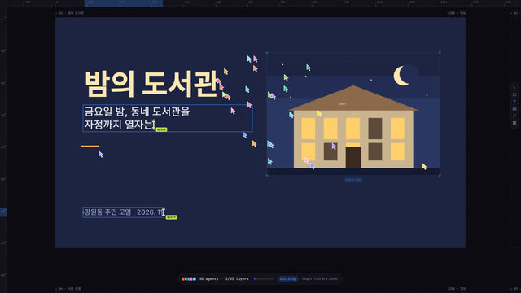
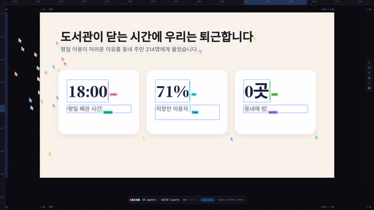
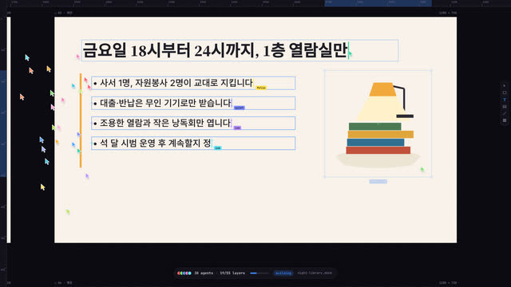
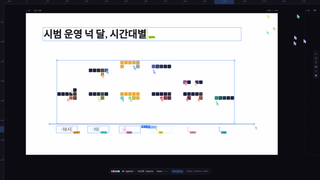
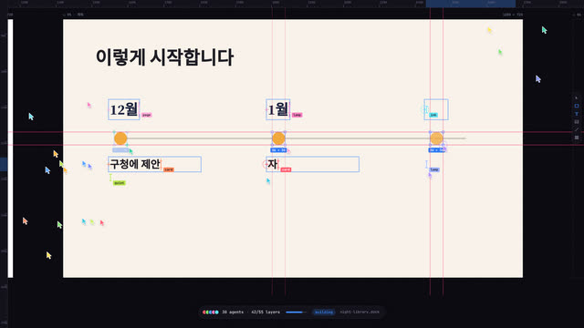
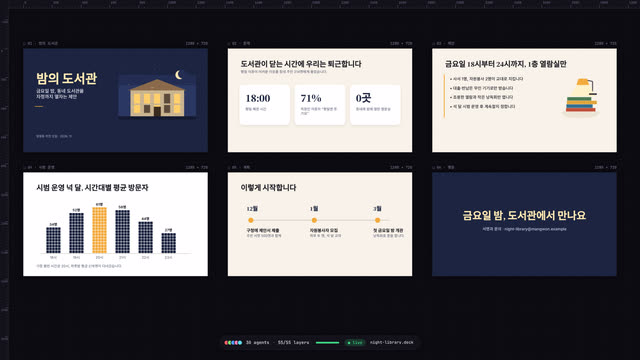

작업 흐름
- 입력
- 주제 하나(동네 빵집 홈페이지, 제안 발표 장표, 레시피 소책자, 공연 포스터 …), 또는 기존 파일(
.pptx·.pdf) - 가져오기
- 파일이면
import-doc.py가 슬라이드 · 페이지마다 글상자, 도형, 그림, 위치, 글자 크기와 색을 읽어 그림 파일, 개요가 채워진 브리프, 점검을 통과하는 초안 빌드를 만듦 - 브리프
- 주제마다 새로 쓰는
BRIEF.md: 무엇을 만들지(웹 · 장표 · 책 · 포스터)와 보드 구성, 누구를 위한 것인지, 섹션과 블록, 모든 문구, 팔레트와 글꼴 역할, 주제를 위해 새로 그릴 그림(defineArt), 커서 군단이 함께 칠하거나 채울 장면, 에이전트 수와 이름, 스틸 검토 기준 - 빌드
- 섹션별 작업(op) 목록: 드래그 선택과 크기 태그 · 빨간 정렬선, I-빔 타이핑과 캐럿 · 이름표, 화면 밖에서 날아오는 파일 카드와 모자이크 해상, 커서 군단의 픽셀 칠하기와 격자 채우기, 칩 배치, 가장 가까운 빈 커서에게 일 배정, 새 작업을 따라 내려가는 카메라(긴 페이지는 스크롤, 장표 · 펼침면은 한 장씩 패닝, 새 보드는 틀을 끌어 그림), 게시 후 전체로 줌아웃
- 확인
- 겹침 · 페이지 밖 · 글씨 크기 · 번들 한글 글꼴 · 작업 중 화면 밖 · 빈 커서 대기 · 결정성을 잡는 자동 점검과 콘택트 시트
- 출력
- 30fps MP4(웹 · 포스터 1080×1350, 장표 · 책 1920×1080, 클릭 · 타이핑 · 드롭 · 칠하기 효과음 합성), 라이브 페이지
cd cursor-swarm/examples/bakery
node ../../scripts/check.mjs index.html
node ../../scripts/render.mjs index.html --sheet 16 --scale .5
node ../../scripts/render.mjs index.html --sfx --workers 4
node ../../scripts/new-build.mjs ../../../my-build --from deck # BRIEF.md부터
python3 ../../scripts/import-doc.py 발표.pptx ../../../my-talk # 기존 장표를 다시 짓기요구 사항: Node + Playwright Chromium, ffmpeg(가져오기는 Python 3 + python-pptx · pymupdf). 네트워크가 필요 없습니다(한 프레임 20–60ms, 35초 예제를 워커 4개로 약 30초). 단계별 순서는 SKILL.md에 있습니다.
샘플
웹사이트 「새벽빵」, 발표 장표 「밤의 도서관」, 책 「겨울 국물 한 그릇」, 템플릿 「Small Hours」의 장면입니다. 모두 원본 영상(개발자 포트폴리오)에 없는 주제이고, 장표는 PPTX 파일에서 가져와 다시 지었습니다. 카드를 누르면 라이브 페이지가 열립니다.
새벽빵 · 웹사이트 examples/bakery · 35초
망원동 새벽 빵집의 홈페이지. 크림색 페이지, 세리프 제목, 오븐 주황, 커서 28개(이름은 flour · yeast · crust …).

시작 · 3초커서들이 쏟아져 나옴아래 알약 창에 요청이 타이핑되고, 커서들이 그 안에서 튀어나와 빈 아트보드 위로 퍼짐

nav · 5초박스는 끌어서 그린다선택 상자와 크기 태그가 커지고, 맞춰지는 순간 빨간 정렬선이 화면을 가로지름

hero · 7초군단이 칠하는 픽셀 배너새벽 거리 그림을 타일로 나눠 커서마다 한 칸씩 칠함. 칸은 커서 색으로 튀었다가 그림 색으로 가라앉음

intro · 12초타이핑과 파일 드롭I-빔과 캐럿, 커서 이름표. 오븐 사진은 화면 왼쪽에서 파일 카드로 날아와 놓임

menu · 17초세 장의 카드를 동시에카드 상자 → 사진 → 이름 · 설명 · 가격을 여러 커서가 나란히 채움

oven hours · 20초굽는 시간표 채우기7 × 16 격자를 커서 군단이 나눠 채움. 월요일은 빈 칸으로 남음

visit · 25초오시는 길지도는 스캔으로 나타나고, 주소 · 시간 · 버튼이 함께 놓임

publish · 34초게시, 그리고 전체 페이지커서들이 알약 창으로 돌아가고 live로 바뀐 뒤 카메라가 페이지 전체로 물러남
밤의 도서관 · 발표 장표 examples/deck · 32초 · PPTX에서
동네 도서관을 금요일 자정까지 열자는 제안 장표 6장. source/night-library.pptx를 import-doc.py로 읽은 초안에, 동시 작업과 군단 장면을 설계해 넣었습니다.

표지 · 5초PPTX의 그림이 날아온다
import-doc.py가 꺼낸 표지 그림을 파일 카드로 옮기고, 제목과 부제를 타이핑
문제 · 9초세 장의 카드를 동시에카드 셋을 함께 끌어 그리고, 큰 숫자와 설명 여섯 줄을 나란히 타이핑

제안 · 13초네 줄을 네 커서가글머리 네 줄을 커서 넷이 동시에 쓰고, 램프 그림은 오른쪽에서 날아옴

시범 운영 · 15초막대그래프를 군단이 채움파일의 막대 도형을 숫자로 다시 읽어 칸 격자로 바꾸고, 커서 22개가 한 칸씩 칠함

계획 · 21초타임라인선을 긋고, 점을 찍고, 세 열을 나란히 타이핑

게시 · 30초여섯 장 전체마지막 장이 끝나면 3 × 2 격자로 줌아웃
겨울 국물 한 그릇 · 책 examples/book · 22초
표지 하나와 펼침면 둘인 레시피 소책자. 쪽마다 여백 44, 쪽 번호는 바깥쪽, 가운데에 제본 그늘.
Small Hours · 심야 음악 축제 templates/site.html · 22초
어두운 페이지 버전의 템플릿. 같은 문법으로 주제만 바꾸면 무엇이 새로 설계되는지 보여 줍니다.


실제 작품
이 레포 안에서 브리프부터(장표는 PPTX 파일부터) 새로 만든 예제와, 스킬을 만든 출처 영상입니다.
「새벽빵 · Dawn Bakery」 라이브 페이지35초 · 7섹션 · 작업 58개 · 커서 28개cursor-swarm/demo/bakery/
「밤의 도서관」 장표 · 라이브 페이지32초 · 슬라이드 6장 · PPTX에서 가져옴cursor-swarm/demo/deck/
「겨울 국물 한 그릇」 책 · 라이브 페이지22초 · 표지 + 펼침면 2cursor-swarm/demo/book/
출처 · AlexZ의 X 게시물"Computer use 需要进化到鼠标集群"x.com/blackanger/status/2118043007413104810
출처 · harshit의 원본 영상「Craziest Website Reveal ever」 · 40초x.com/hrstwt/status/2117947212936392958
링크
- SKILL.md 워크플로
- 폴더 lib · scripts(import-doc.py 포함) · references · templates · examples
- README.md 빠른 시작
- references/BRIEF.md 고정 vs 주제마다 · 브리프 틀 · 검토 기준
- references/LOOK.md 원본처럼 보이게 하는 것
- references/CHOREO.md 보드 · 섹션 · 작업 · 타이밍 · 웹 · 장표 · 책 배치 공식
- references/IMPORT.md PPTX · PDF를 다시 짓기
- references/KIT.md API · 그림 키트 · 픽셀 글꼴
- references/SOURCE.md 원본 영상 초 단위 관찰
- references/LESSONS.md 겪은 문제와 해결